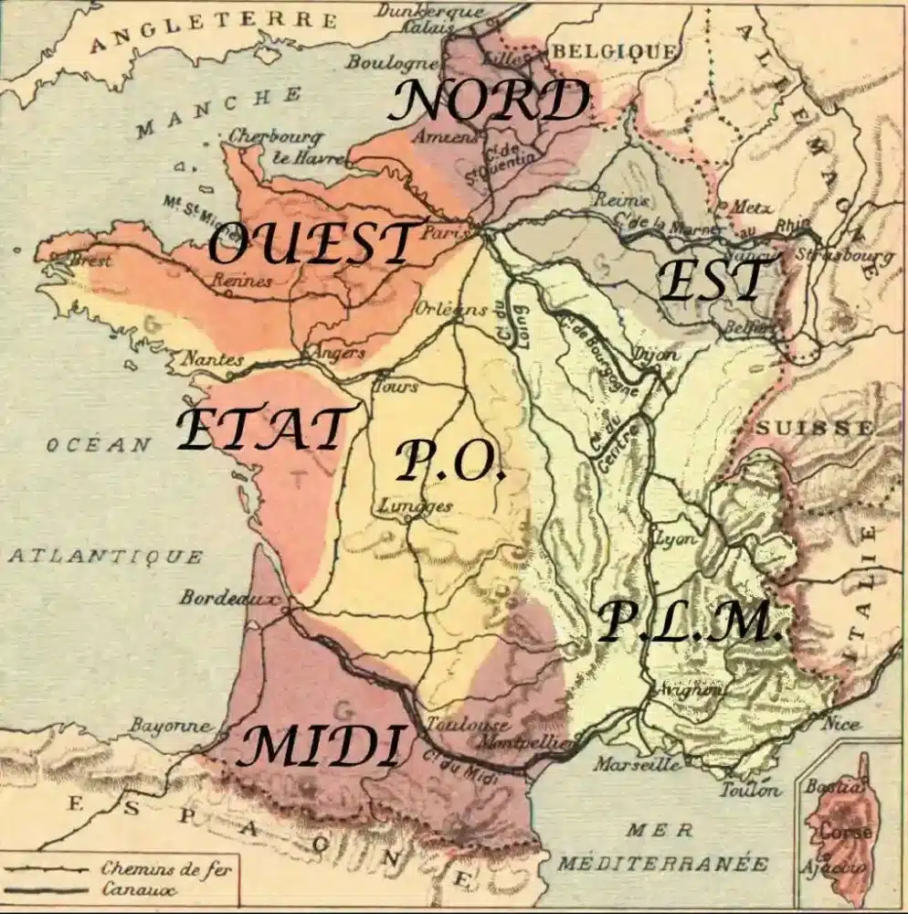
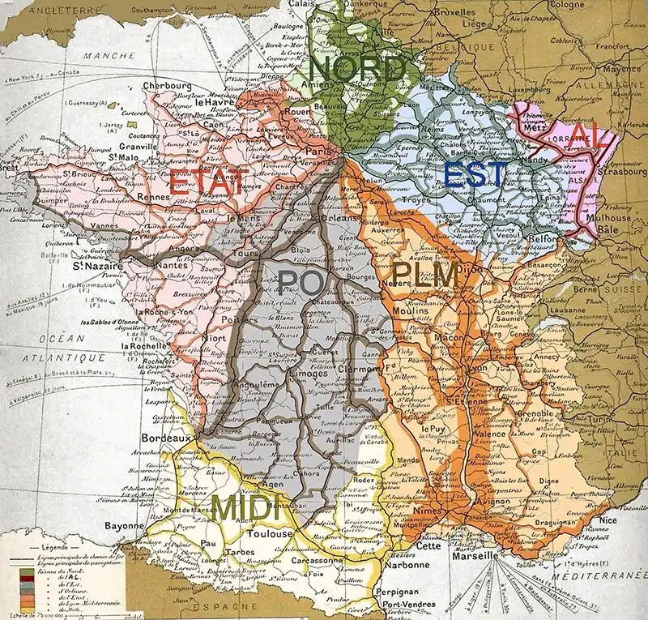

L'âge d'or du ferroviaire (1840-1936)
Les premières compagnies et grandes lignes
En 1841, la compagnie des chemins de fer de Strasbourg à Bâle inaugure la ligne de Strasbourg-Ville à Saint-Louis, elle parcourait 134km.
Cette ligne allait de Strasbourg-Koenigshoffen (une gare strasbourgeoise mise en service en 1841 et fermé en 1846, devenu une gare de triage fret) à Saint-Louis.
Il s'agit de la première ligne internationale européenne, puisque Saint-Louis se trouve à la frontière Suisse aux abords de Bâle.
En 1842, une loi est mise en vigueur, il s'agit de la Loi relative à l'établissement des grandes lignes de chemin de fer en France connue sous le nom de l'étoile de Legrand.
Baptiste Legrand trace les grandes ligne en forme d'étoile centrée sur Paris, ce qui influencera beaucoup le futur du ferroviaire et de l'économie française.
Cette même année a lieu le premier raccordement à un réseau d'un pays voisin, grâce à la ligne de Tourcoing à Mouscron qui se raccorde à la ligne belge de Fives à Mouscron.
En 1852, les frères Pereire fondent la Compagnie des chemins de fer du Midi et du Canal latéral à la Garonne.
Celle-ci succédent aux compagnies possédant les lignes de Bordeaux à Séte, Bordeaux à Bayonne et Narbonne à Perpignan.
En 1859, le réseau français est dirigé par 6 grandes compagnies:
| Nom | Création | Disparition | Grandes villes desservies | Gare parisienne |
|---|---|---|---|---|
| Ouest | 1855 | 1908 | Paris, Rennes, Rouen, Le Havre, Brest, Cherbourg, Nantes |
Paris-Ouest devenu Montparnassse Paris-Saint-Lazare |
| Paris-Orléans (PO) | 1838 | 1938 | Paris, Orléans, Tours, St-Nazaire, Bordeaux, Montauban, Clermont |
Paris-Orléans devenu Austerlitz |
| Midi puis PO-Midi | 1852 | 1934 | Bordeaux, Bayonne, Perpignan, Cette (Séte),Toulouse |
Aucune |
| Paris-Lyon-Méditerranée (PLM) | 1857 | 1938 | Paris, Lyon, Dijon, Nice... | Paris-Lyon |
| Est | 1845 | 1937 | Paris, Strasbourg, Metz, Nancy | Paris-Bastilles puis Paris-est |
| Nord | 1845 | 1938 | Paris, Lille, Calais, Amiens | Paris-Nord |
Plus tard, en 1871, La France perd la guerre contre la Prusse et doit donner l'Alsace et la Moselle à la Prusse. C'est ainsi que née la compagnie des chemins de fer d'Alsace-Lorraine (AL). En 1878, sera fondé l'Administration des chemins de fer de l'Etat. L'Etat rachète quelques compagnies en faillites entre Nantes et Bordeaux, en plus de récuperer des lignes du PO.
La carte des voies ferrées françaises vers 1880. En 1908, l'Administration des chemins de fer de l'État rachète la compagnie des chemins de fer de l'Ouest.
La première guerre mondiale (1914-1918)
Dès le début de la guerre entre l'Autriche-Hongrie et la Serbie (le 28 Juillet), en France on mobilise des hommes pour garder les voies de communication. Ce sont principalement les hommes nés entre 1870 et 1880. Leur mission est d’assurer la surveillance des ouvrages d’art et des voies de communication (voies ferrées, routes, voies navigables, transmissions par câbles…). Les hommes des classes normalement appelées mais qui ont un emploi aux chemins de fer qui est essentiel au fonctionnement du pays sont "considérés comme appelés sous les drapeaux et maintenus à leur emploi du temps de paix au titre des sections de chemin de fer de campagne" (article 42 de la loi de recrutement). Les voies ferrées seront donc utilisées pour transporter les munitions et les soldats vers le front. Après l’armistice, le personnel des sections de chemins de fer de campagne participe à l’exploitation des réseaux d’Alsace-Lorraine, du Luxembourg et des pays Rhénans. Le Ministère de la Défense Nationale a attribué une carte de combattants aux anciens cheminots des sections de chemins de fer de campagne
A la veille de la création de la SNCF, le réseau ressemblait à celà.